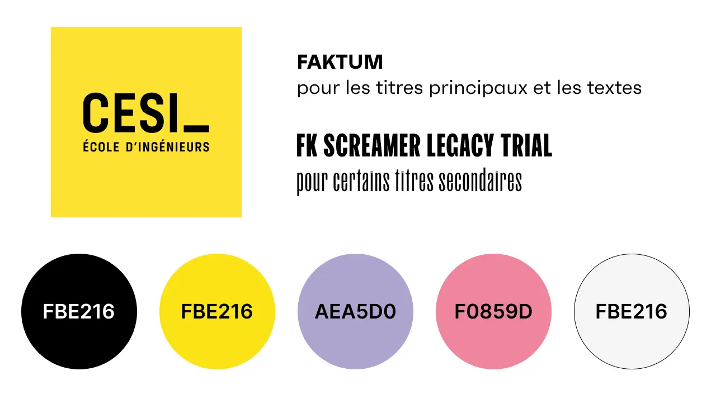
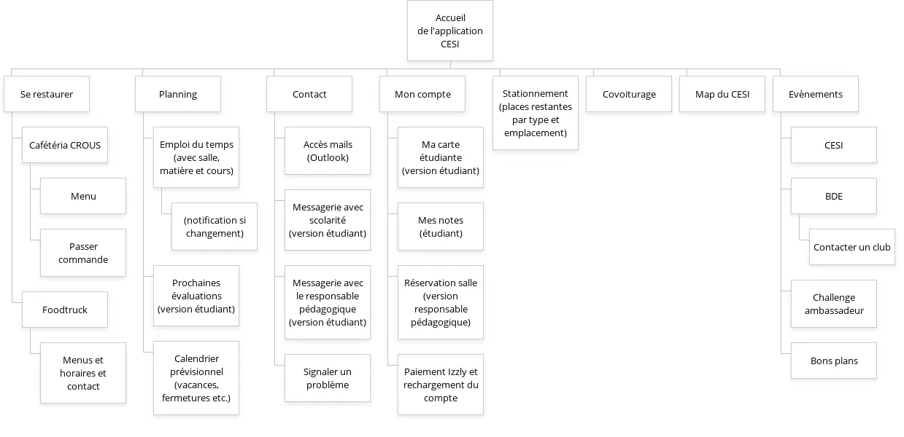

Maquette d'une application mobile pour le CESI de Rouen
Contexte


Dans le cadre d'un projet centré sur l'innovation et la citoyenneté, il a été demandé d'imaginer une application mobile et de réaliser une Prouf Of Concept ainsi qu'une maquette des interfaces de celle-ci. Le choix de l'objectif et du contenu de l'application a été laissé au groupe. Composé d'étudiants en développement informatique et en développement web, une répartition des tâches a été effectuée en fonction des compétences de chacun : je me suis chargée, avec un autre étudiant en développement web, de réaliser la maquette des interfaces.
Processus
- Choix de l'objectif et du contenu de l'application mobile
- Conceptualisation des services et de l'arborescence de l'application
- Maquettage des interfaces de l'application
Choix de l'objectif et du contenu de l'application mobile
Dans le cadre de ce projet, le groupe de travail a choisi de créer une application dédiée aux étudiants, responsables pédagogiques et intervenants du CESI de Rouen. Celle-ci comprendrait une grande partie des services disponibles via l'Espace Numérique de Travail ainsi que des services innovants et/ou citoyens tels que :
- un service de GPS intérieur proposant un itinéraire classique et un itinéraire adapté aux personnes en situation de handicap
- un service d'alerte en cas d'urgence vitale
- un service de mise en relation pour effectuer du covoiturage
- un service d'information en direct des places de parking disponibles au CESI ainsi que leur emplacement et leur type (véhicule classique, véhicule électrique, dédié au covoiturage)
A l'issue du choix de l'application et de son contenu, un délai de 2 jours a été laissé pour en réaliser le maquettage.
Conceptualisation des services et de l'arborescence de l'application
1 / Identification de la charte graphique initiale
La première partie du travail de conception a consisté à extraire la charte graphique du site du CESI afin de conserver une cohérence entre la solution web et la solution mobile. L'inspecteur a permis la bonne réalisation de cette tâche. Voici les éléments extraits :
Les couleurs ont ainsi été réutilisées dans la maquette.
2 / Création des personas
Deux personas ont été créés, à l'effigie de deux des trois utilisateurs présumés de l'application. Il s'agit d'un étudiant et d'un responsable pédagogique. Ces personas ont permis de mieux imaginer les problématiques qu'ils rencontrent dans leur quotidien au sein de l'école. Des services en lien avec ces besoins ont ainsi été proposés.
{kind=link}
{kind=link}
3 / Création de l'arborescence
Une arborescence a ainsi été construite dans l'objectif de faciliter l'accès aux différents services des utilisateurs de type étudiant principalement. Quelques fonctionnalités ont été imaginées pour les utilisateurs de type responsable pédagogique.
Cette arboresecnce a été particulièrement utile pour créer la maquette des interfaces.
Maquettage des interfaces de l'application
Après la réalisation d'un plan interne à l'établissement sous Adobe Illustrator, le maquettage a été effectué avec Figma. En tout, 36 frames ont été réalisées en 48h afin de répondre au "délai de livraison" imposé par le projet.
Ci-dessous sont présentées 4 des interfaces les plus significatives à mon sens. Elles ont été conçues pour un format Iphone 13 mini (375 x 874) :
La maquette de l'ensemble des interfaces est consultable en cliquant ici .
.